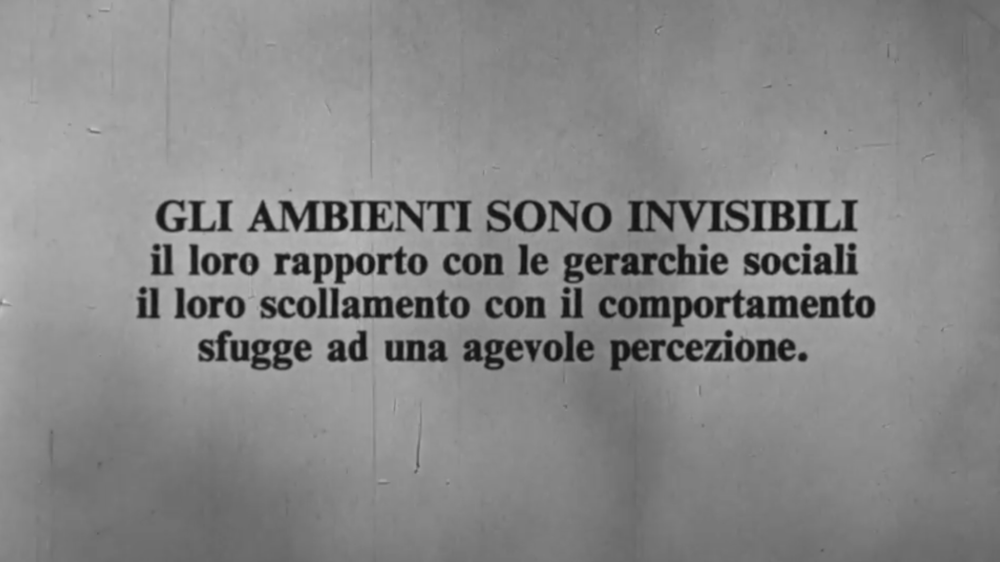

“They wanted an adventure, and to live it out with you. In the end all that’s all that can be said. They believed resolutely that the future would be modern: different, impassioning, and definitely difficult. Peopled by cyborgs and bare handed entrepreneurs, frenzied stock-marketeers and turbine-men. And for those that are willing to see it, the present is already like that. They think the future will be human, feminine even — and plural; so that everyone can really live it, so that everyone participates in it. They are the Enlightenment men we’ve lost, infantrymen of progress, the inhabitants of the 21st century. They fight against ignorance, injustice, poverty, and suffering of all kinds. They go where it’s happening, where things are going on. They don’t want to miss out on a thing. They’re humble and courageous, at the service of interests that are far beyond them, guided by a higher principle. They can pose problems, and they can find solutions. They’ll have us traversing the most perilous of frontiers, they’ll reach out a hand to pull us up onto the shore of the future. They’re History marching forth, at least what’s left of it, because the hardest part is over. They’re the saints and the prophets, true socialists. They’ve known for a long while that May 1968 wasn’t a revolution. The true revolution is the one they’re making. Now it’s just a matter of organization and transparency, intelligence and cooperation. A vast program! Then...”
Excuse me? What? What’d you say? What program? The worst nightmares, you know, are often the metamorphoses of a fable, fables PEOPLE tell their kids to put them to sleep and perfect their moral education. The new conquerors, who we’ll call the cyberneticians, do not comprise an organized party — which would have made our work here a lot easier — but rather a dif- fuse constellation of agents, all driven, possessed, and blinded by the same fable. These are the murderers of Time, the crusaders of Sameness, the lovers of fatality. These are the sectarians of order, the reason-addicts, the go-between people."
"Hanno voluto un’avventura e viverla con voi. Infine è la sola cosa da
dire. Credono risolutamente che il futuro sarà moderno: diverso,
appassionante, sicuramente difficile. Popolato di cyborgs e
imprenditori dalle mani pulite, febbri da borsa e uomini-turbine. Come
già è il presente per coloro che vogliono vederlo. Essi credono che
l’avvenire sarà umano, addirittura femminile – e plurale; purché
ciascuno lo viva, e che tutti vi partecipino. Si tratta di loro, i Lumi che
avevamo perso, i fanti del progresso, gli abitanti del XXI secolo. Essi
combattono l’ignoranza, l’ingiustizia, la miseria, le sofferenze d’ogni
ordine. Essi sono là dove c’è movimento, là dove succede qualcosa.
Non vogliono perdersi nulla. Sono umili e coraggiosi, al servizio d’un
interesse che li supera, guidati da un superiore principio. Essi sanno
porre i problemi, ma anche trovare le soluzioni. Essi ci faranno
varcare le frontiere più pericolose, dalle rive del futuro ci tenderanno
la mano. Essi sono la Storia in cammino, almeno ciò che ne rimane,
poiché la parte più dura è alle nostre spalle. Sono santi e profeti, veri
socialisti. È da tanto che essi hanno compreso che maggio ‘68 non era
una rivoluzione. La vera rivoluzione, la fanno loro. È solo questione
d’organizzazione e trasparenza, d’intelligenza e cooperazione. Vasto
programma! Eppoi…».
Prego? Cosa? Che dite? Quale programma? Gl’incubi peggiori,
sapete, sono sovente le metamorfosi d’una favola, di quelle che SI
sono raccontate a noi, quando eravamo fanciulli, al fine di
addormentarci e di portare a compimento la nostra educazione morale.
I nuovi conquistatori, coloro che qui chiameremo i cibernetici, non
formano un partito organizzato – cosa che ci avrebbe reso più facile il
compito – ma una diffusa costellazione d’agenti, agiti, posseduti,
accecati dalla stessa fiaba. Si tratta degli assassini del tempo, i crociati
del Medesimo, gl’innamorati della fatalità. Si tratta dei seguaci
dell’ordine, gli appassionati della ragione, il popolo degli
intermediari".
The Cybernetic Hypothesis, Tiqqun



We never said it's meant to be 100% entertainment